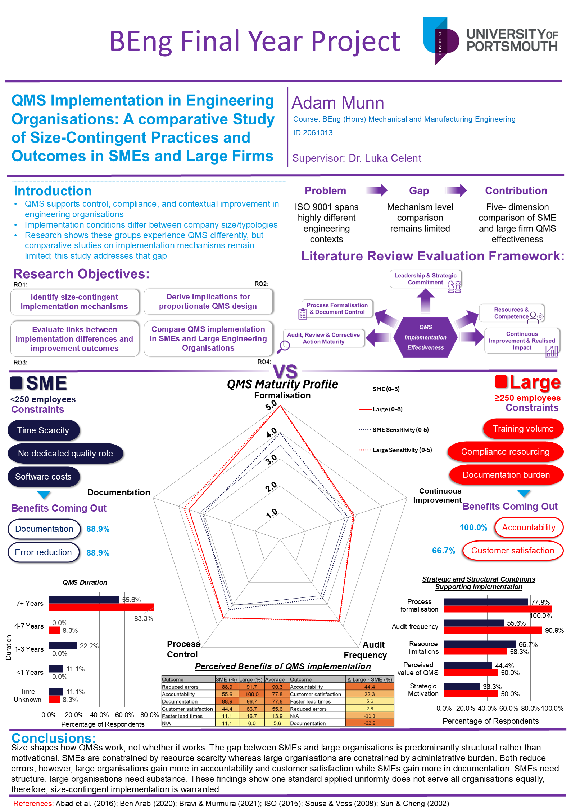

Final grade
80%
First-class classification
BEng Final Year Project
A comparative study of ISO 9001 quality-management-system implementation across small and medium-sized engineering enterprises and large engineering organisations.
80%
First-class classification
ISO 9001 is widely adopted across engineering organisations of substantially different sizes. The project examined whether QMS implementation is equally effective across SMEs and large firms, or whether organisational scale affects how the standard is applied in practice.
The study assessed maturity across five dimensions and considered whether implementation gaps were associated with leadership intent, organisational capacity or differences in formalisation.
ISO 9001 is widely adopted across engineering organisations of varying scale, yet the comparative effectiveness of QMS implementation across organisations of differing size remains underexplored. A structured questionnaire was administered to 21 engineering professionals and analysed using a five-dimension maturity-scoring model, non-parametric tests and Gauss Area Formula quantification.
Large organisations exceeded SMEs across all five dimensions by at least 57.7%. Accountability improvements diverged by 44.4 percentage points, while leadership commitment remained broadly comparable across both groups. The findings indicate that the implementation gap reflects organisational capacity rather than intent and support the case for size-contingent QMS frameworks.
A five-dimension maturity framework was used to compare ISO 9001 implementation across SMEs and large engineering organisations.
A structured questionnaire was completed by 21 engineering professionals, allowing quantitative and qualitative comparison between the two organisation-size groups.
The analysis combined maturity scoring, Mann-Whitney U testing, Fisher's Exact testing, sensitivity checks and Gauss Area Formula quantification applied to radar-profile results.
Large organisations achieved a substantially larger radar-profile area across the five maturity dimensions, indicating stronger implementation maturity overall.
Accountability improvements showed the clearest divergence between large organisations and SMEs.
Leadership commitment was broadly comparable across both groups. The implementation gap was more closely associated with organisational resources, structure and capacity.
Establishes that ISO 9001 is applied uniformly across organisations of substantially different sizes, despite contingency theory predicting that organisational scale should affect implementation. The chapter defines the research gap and sets out four objectives covering maturity profiling, implementation mechanisms, formalisation-outcome relationships and size-contingent design implications.
Reviews organisational typologies, governance structures, implementation strategies, market context, outsourcing and previous comparative studies. The chapter develops a conceptual framework grounded in contingency theory, the resource-based view and institutional theory.
Sets out the mixed-methods questionnaire design, the five-dimension maturity framework and the analytical methods used. The chapter also documents decision rules, sensitivity checks, ethical approval and limitations associated with the achieved sample size.
Reports that large organisations exceeded SMEs across all five maturity dimensions. The largest differences appeared in process formalisation and audit frequency, while accountability improvements diverged by 44.4 percentage points. The directional findings remained consistent under two sensitivity analyses.
Interprets the 57.7% radar-area gap as evidence that size effects are concentrated in structural and procedural dimensions rather than leadership intent. The chapter argues that QMS implementation methods should be adapted to organisational size while retaining consistent quality expectations.
Evaluates the instrument design, sample limitations and the role of qualitative triangulation where inferential power was constrained. The chapter concludes that size effects are dimension-specific and that targeted structural interventions are more appropriate than whole-system redesign.

Select the poster image to open the full-size preview.
Open original poster PDFThe complete submitted dissertation is available as a PDF.
Open full reportThe submitted poster provides a condensed visual summary of the project.
Open poster PDF